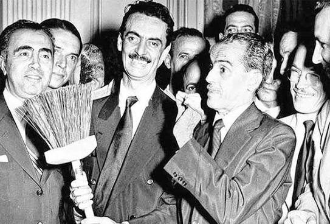

10Jânio Quadros segurando uma vassoura em evento de campanha, cercado por apoiadores de terno, 1960
A que se achou no Commons NÃO é esta imagemsemelhança medida -0.02 / 0.28
Legenda/crédito no texto: “Jânio Quadros em campanha, com seu símbolo inseparável, a vassoura. Fonte: Folha Imagem/Folhapress”
Foto do livro é creditada à Folha Imagem/Folhapress (agência, sem licença livre) e mostra Jânio recebendo uma vassoura cerimonial cercado de homens de terno; esta alternativa do Commons é do mesmo tema/ano (campanha de 1960, símbolo da vassoura), mas registra o candidato distribuindo vassourinhas à multidão - não é o mesmo clique.

procurar esta imagem no Google Lens — abre no seu navegador; serve para achar autor e acervo da imagem
Há substituta sugerida n.º 5 em Sugeridas, com a fonte e a licença
arquivo do livro: Imagens/U10/atuais/10_Janio_Quadros_segurando_uma_vassoura_em_evento_de_campanha_c_DO_LIVRO.jpg
A que se achou no Commons NÃO é esta imagemsemelhança medida -0.02 / 0.28
Legenda/crédito no texto: “Jânio Quadros em campanha, com seu símbolo inseparável, a vassoura. Fonte: Folha Imagem/Folhapress”
Foto do livro é creditada à Folha Imagem/Folhapress (agência, sem licença livre) e mostra Jânio recebendo uma vassoura cerimonial cercado de homens de terno; esta alternativa do Commons é do mesmo tema/ano (campanha de 1960, símbolo da vassoura), mas registra o candidato distribuindo vassourinhas à multidão - não é o mesmo clique.

Não é a imagem do livro — retrata o mesmo assunto:
CC BY 3.0 · 511×678 px
Janio Quadros distribui vassourinhas em campanha 1960.png
Autor/fonte: Jornal Correio da Manhã (acervo Arquivo Nacional)
página no Commons · arquivo original
arquivo: Imagens/U10/atuais/10_Janio_Quadros_segurando_uma_vassoura_em_evento_de_campanha_c_COMMONS.png
CC BY 3.0 · 511×678 px
Janio Quadros distribui vassourinhas em campanha 1960.png
Autor/fonte: Jornal Correio da Manhã (acervo Arquivo Nacional)
página no Commons · arquivo original
arquivo: Imagens/U10/atuais/10_Janio_Quadros_segurando_uma_vassoura_em_evento_de_campanha_c_COMMONS.png
procurar esta imagem no Google Lens — abre no seu navegador; serve para achar autor e acervo da imagem
Há substituta sugerida n.º 5 em Sugeridas, com a fonte e a licença
arquivo do livro: Imagens/U10/atuais/10_Janio_Quadros_segurando_uma_vassoura_em_evento_de_campanha_c_DO_LIVRO.jpg


.jpg)